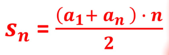

Progressão Aritmética
A progressão aritmética (PA) é uma sequência numérica onde a diferença entre dois termos consecutivos(a1 e a2, a5 e a6, etc) é sempre constante. Esse conceito é importante para entender como certos tipos de pagamentos ou recebimentos podem evoluir ao longo do tempo, como em empréstimos ou planos de amortização.
Fórumlas
-
Formula do termo geral
aₙ = a1 + ( n - 1 ) r - Soma dos termos de uma PA infinita
 - n-ésimo termo(primeiro):

- an = n-ésimo termo
- a1 é o primeiro termo
- r é a razão
- n é o número de termos
r > 0 = Crescente
r = 0 = Constante
r < 0=Decrescente